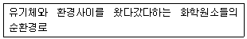
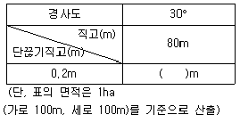
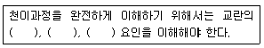
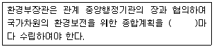

자연생태복원기사(구) (2017-08-26 기출문제)
1과목: 환경생태학개론
1. 생물군집에서 여러 다른 종들 사이에 일어날 수 있는 상호관계가 아닌 것은?
- 공생
- 기생
- 호흡
- 경쟁
(정답률: 83%)

2. 극상군집과 관련된 설명이 아닌 것은?
- 방해극상
- 다극상설
- 개척군집
- 단극상설
(정답률: 73%)
3. 남아메리카의 팜파스(pampas), 아프리카의 벨트(veldt)와 사바나(savanna)로 대표되는 육상 생태계의 종류는?
- 초원
- 사막
- 열대우림
- 온대 낙엽수림
(정답률: 64%)
4. 생태계는 영양적(Trophic)인 입장에서 두 개의 구성요소를 갖는다. 이중 무기물을 사용하여, 복잡한 유기물질의 합성을 주로 하는 것은?
- 독립영양부분(autotrophic component)
- 종속영양부분(heterotrophic component)
- 대형소비자(macroconsumers)
- 섭식영양자(phagotrophs)
(정답률: 74%)
5. 수소 순환에서 수소 소비에 관여하는 미생물은?
- Oxygenic photosynthetic bacteria
- budding bacteria
- Nitrifying bacteria
- Homoacetogenic bacteria
(정답률: 58%)
6. 지표종(indicator species)에 대한 설명으로 틀린 것은?
- 내성범위가 좁은 종은 넓은 종보다 더 확실한 지표가 된다.
- 희소종일수록 좋은 지표종이다.
- 환경조건이 극단적으로 악화되어도 생존이 가능한 종은 그런 환경조건에 대한 좋은 지표종이다.
- 보통 몸이 작은 종은 큰 종보다 더 좋은 지표종이 된다.
(정답률: 52%)
7. 농약을 사용하지 않는 해충구제 방법에 해당되지 않는 것은?
- 생물학적 조절
- 유전적 조절
- 호르몬과 페로몬 이용법
- 유기인제의 살포
(정답률: 77%)
8. 토양침식의 주된 원인이 아닌 것은?
- 과도한 목축
- 과도한 경작
- 간벌
- 산림제거
(정답률: 73%)
9. 공진화(coevolution)에 대한 설명으로 옳지 않은 것은?
- 둘 이상의 종이 상호작용하여 일어나는 진화이다.
- 두 종 모두에서 일어나는 변화이다.
- 많은 군집들이 수 세대 동안 진화를 반복하면서 발전되어 왔다.
- 상리공생하는 군총에서는 공진화가 필요 없다.
(정답률: 80%)
10. 생물상이 다양하며 담수생물과 육상생물의 서식처로서의 양면성을 가지는 생태계는?
- 연안
- 습지
- 육수
- 정수
(정답률: 74%)
11. 해양에서 오염의 정도를 지시해주는 오염지표종에 대한 설명으로 옳지 않은 것은?
- 오염이 극심해지는 최후까지 견딜 수 있다.
- 환경이 회복됨에 따라 점차로 서식밀도가 감소한다.
- 대부분 생활사가 길고, 몸이 크며, 연중산란이 가능한 기회종으로 구성되어 있다.
- 오염의 진행에 따라 다른 종들은 개체수가 감소하고, 지표종은 더 많은 개체수를 보인다.
(정답률: 63%)
12. 생태계의 에너지 흐름 과정의 순서가 옳은 것은?
- 열에너지 → 화학에너지 → 빛에너지
- 빛에너지 → 화학에너지 → 열에너지
- 빛에너지 → 열에너지 → 화학에너지
- 화학에너지 → 열에너지 → 빛에너지
(정답률: 54%)
13. 다음의 설명에 해당되는 것은?

- 물질 순환
- 에너지 순환
- 생지화학적 순환
- 생물종 순환
(정답률: 68%)
14. 생물학적 체제에서 가장 상위계급은?
- 분자
- 조직
- 군집
- 개체
(정답률: 84%)
15. 여름에 온대지방의 호수들은 깊이에 따라 표수층, 중수층(수온약층), 심수층으로 나누어지는 데, 이들의 설명으로 틀린 것은?
- 수중 용존산소량은 표수층이 가장 높고, 심수층이 적다.
- 수심에 따른 밀도는 표수층에서는 낮게 유지되고, 심수층에서는 높게 유지된다.
- 표수층은 심수층에 비해 산소와 영양염이 충분한 층이다.
- 수온약층은 온도가 급격히 변하는 변수층이다.
(정답률: 59%)
16. 온대지역의 조간대 가장자리에 한시적으로 높은 밀도의 해조류 군집이 우점하는 계절은?
- 봄철
- 여름철
- 가을철
- 겨울철
(정답률: 43%)
17. 생물 개체군은 어떤 특정 공간을 점유하는 동일한 종으로 구성된 집합체로서 통계적인 몇 가지 특성을 가지고 있다. 이에 해당되지 않는 것은?
- 밀도 및 분산
- 출생율과 사망율
- 연령분포
- 생활형
(정답률: 56%)
18. 개체군의 구조 유형 중에서 자연환경조건이 균일하지만 서로 모이기를 싫어하는 개체군들에서 나타나는 분포형은?
- 규칙분포(uniform distribution)
- 임의분포(random distribution)
- 집중분포(clumped distribution)
- 고립분포(isolated distribution)
(정답률: 60%)
19. 생물이 살아가는 환경에 있어 내성범위에 관한 설명으로 옳지 않은 것은?(오류 신고가 접수된 문제입니다. 반드시 정답과 해설을 확인하시기 바랍니다.)
- 생물은 내성범위의 중앙에서 가장 잘 자라는 최적범위를 갖는다.
- 금붕어가 살 수 있는 수온의 내성범위는 6~36.6℃이다.
- 생물이 자라는 정도와 환경요인과의 관계에 있어 S자 모양의 곡선을 나타낸다.
- 코의 광합성은 30℃정도에서 가장 빠르다.
(정답률: 49%)
20. 수생생태계 서식 생물그룹을 보편적인 3그룹으로 구분하면?
- 조류(Algae), 원생동물(Protozoa), 후생동물(Metazoa)
- 플랑크톤(Plankton), 유영생물(Nekton), 저서생물(Benthos)
- 박테리아(Bacteria), 생산자(Producer), 어류(Fish)
- 부착미소조류(Periphyton), 절지동물(Arthropod), 척추동물(Vertebrate Animals)
(정답률: 72%)
2과목: 환경계획학
21. 어메니티 플랜의 기본방침으로 가장 거리가 먼 것은?
- 지역의 특성을 감안하여 시민의 의향을 충분히 반영한 개성적인 계획이어야 한다.
- 계획의 내용은 실현가능성이 있어야 한다.
- 민ㆍ관의 역할 구분없이 지역경제의 활성화에 우선적으로 기여할 수 있어야 한다.
- 종래 행해져 왔던 개별시책, 신규시책과 유기적인 연계관계를 가져야 한다.
(정답률: 68%)
22. 환경친화적인 하천정비계획의 기본방향이라고 볼 수 없는 것은?
- 하천의 제반기능이 조화된 체계적인 하천관리
- 수환경 및 하천공간과의 일체화된 정비
- 친수성회복과 지역사회에 부응하는 하천정비
- 특정 구간의 친수성 회복을 위해 단기적으로 집중정비
(정답률: 64%)
23. 경관 조각 모양의 특성을 설명하는 주요 속성이 아닌 것은?
- 굴곡
- 신장
- 연결성
- 둘레
(정답률: 47%)
24. 생물종의 감소를 방지하고 생물자원의 합리적 이용을 위해 1992년 6월 리우데자네이루에서 채택된 협약은?
- 람사협약
- 생물다양성협약
- 사막화방지협약
- 기후변화협약
(정답률: 69%)
25. 환경의 자정능력에 대한 설명으로 틀린 것은?
- 변화에 적응하고 균형을 유지한다.
- 수질, 대기, 토양분야에 주로 적용된다.
- 생태계의 자정능력에는 일정한 한계가 있다.
- 오염물질의 배출 초과와는 관련이 없다.
(정답률: 77%)
26. 도시지역에서 비오톱의 기능에 해당하지 않는 것은?
- 도시민의 휴식 공간
- 환경교육을 위한 실험지역
- 난개발방지를 위한 개발 유보지
- 도시생물종의 은신처 및 이동통로
(정답률: 54%)
27. 생물다양성의 유지ㆍ복원을 위한 환경계획으로 틀린 것은?
- 인간의 이용을 중심으로 하는 구역과 자연지역을 구분 없이 계획해야 한다.
- 생물 다양성의 유지ㆍ복원을 위해 일정 수준 이상의 수평공간이 확보되어야 한다.
- 자연지역을 가능한 한 크게 만들고 통로를 설치하여 생물적 네크워크를 확보하는 것이 중요하다.
- 자연지역과 인위지역 사이에 완충지역을 배치한다.
(정답률: 76%)
28. OECD에서 채택한 환경지표 설정을 위한 요소로 인간과 환경의 대응 관계에 대한 3가지 구조요소에 해당하지않는 것은?
- 계획(plan)
- 환경상태(state)
- 대책(response)
- 환경에의 부하(pressure)
(정답률: 55%)
29. 토지관련 주제도 중 전 국토를 대상지역으로 하지 아니하고 주로 도시화지역을 대상으로 구축하는 주제도는?
- 토지특성도
- 토지이용현황도
- 생태자연도
- 토지피복지도
(정답률: 32%)
30. 생태환경 복원 및 녹화의 목적을 달성하기 위한 추진방향으로 옳지 않은 것은?
- 자연회복을 도와주도록 하여야 한다.
- 자연의 군락을 재생ㆍ창조 하여야 한다.
- 자연흐름과 물리적으로 구분되는 방법으로 군락을 재생하여야 한다.
- 자연에 가까운 방법으로 군락을 재생하여야 한다.
(정답률: 67%)
31. 환경계획의 접근방법에 가장 부합하는 것은?
- 개발가능지 확보를 위한 계획적 접근시도
- 경사, 표고, 경관, 수문분석 등 주로 물리적환경 위주의 대상지 분석
- 해당지역과 주변지역을 포함한 유역권 전체에 대한 조사 및 분석
- 개발의 결과로 제기되는 환경오염의 사후처리에 대한 내용에 비중
(정답률: 48%)
32. 생태 네트워크를 구성하는 요소가 아닌 것은?
- 핵심지역
- 개발지역
- 완충지역
- 생태적 코리더
(정답률: 73%)
33. 수질정화를 위한 습지 조성 시 습지의 기능이 아닌 것은?
- 홍수 시 초기 유량을 담수시켜 수질을 개선한다.
- 어류 및 야생생물을 위한 서식처를 확보한다.
- 환경생태공원 및 생태학습장을 조성할 수 있다.
- 유지, 관리가 다른 수질개선방법에 비해 쉬우나 비용이 많이 든다.
(정답률: 61%)
34. 환경계획의 입지선정 요소 중 중요하게 활용되고 있는 경사도 100%의 도수로 적당한 것은?
- 45도
- 30도
- 15도
- 10도
(정답률: 52%)
35. 환경문제의 특성에 해당되지 않는 사항은?
- 엔트로피 감소
- 상호관련성
- 광역성
- 시차성
(정답률: 70%)
36. 지속가능한 발전(ESSD)의 개념 중 맞지 않는 것은?
- 1987년 브룬트란트(Brundtland) 보고서에서 최초로 언급되었다.
- 경제와 환경을 동시에 고려하기는 어렵다.
- 생태적 회복성, 경제성장, 형평성의 내용을 담고 있다.
- 미래세대의 후생을 저해하지 않는 범위 내에서 현재의 필요를 충족시킨다.
(정답률: 70%)
37. 가렛 하딘(garrett hardin)의 「공유지의 비극」에 해당하지 않는 것은?
- 개인의 이익을 극대화하려고 한다.
- 각각의 목장주에게 할당된 가축이 있다.
- 공공재의 중요성에 대해 기술하고 있다.
- 자연자원은 무한하므로 관리가 필요하지 않다.
(정답률: 75%)
38. 어떤 일정한 생명집단 및 사회 속에서 3차원적이고 지역적으로 다른 것들과 구분되는 생명공간 단위에 해당하는 것은?
- 비오톱(biotope)
- 식생(vegetation)
- 종(species)
- 개체군(population)
(정답률: 69%)
39. 훼손된 자연을 회복시키고자 하는 세 가지 단계에 해당되지 않는 것은?
- 복구
- 복원
- 보호
- 재배치
(정답률: 49%)
40. 환경부에서 추구하고 있는 자연환경보전계획의 실천목표들로 가장 바람직한 것은?
- 자연환경 관리기반 구축, 친환경적 국토관리, 생물 다양성 보전 및 관리 강화
- 지구온난화 예방 및 CO2 감축 방안, 자연자산의 지속 가능한 이용, 친환경적 국토관리
- 생물다양성 보전 및 관리강화, 자연공원조성 확대, 자연보호 교육ㆍ홍보 강화
- 남ㆍ북한 및 국제협력 강화, 자연환경 관리기반 구축, 친환경농업 홍보 강화
(정답률: 64%)
3과목: 생태복원공학
41. 일반적으로 생태계 중 단위면적당 가장 많은 생물다양성을 보유할 수 있는 것은?
- 삼림
- 사막
- 초지
- 습지
(정답률: 60%)
42. 생태복원 대상지역에 영향을 미치는 주변 지역을 조사하여, 복원 예정 지역에 미치는 영향을 파악하는 것은?
- 지역적 맥락(regional context)의 조사
- 역사적 자료의 조사
- 원형(prototype)의 조사
- 생태적 기반 조사
(정답률: 60%)
43. 최대 침투능이 100㎜/hr인 지역에 강우강도 90㎜/hr로 비가 왔을 때, 지표유출량이 30㎜/hr이었다면 투수능(㎜/hr)은?
- 70
- 60
- 30
- 10
(정답률: 63%)
44. 부레옥잠, 개구리밥과 같이 물속으로 뻗는 뿌리줄기가 항상 수면을 떠다니는 식물은?
- 정수식물
- 부엽식물
- 침수식물
- 부유식물
(정답률: 70%)
45. 다음 표는 산지 1㏊당 경사도별 단끊기 시공 연장표이다. ( )에 알맞은 계단 연장은?

- 2000
- 3000
- 4000
- 16000
(정답률: 47%)
46. 산림은 자연에 적응하면서 거기에 적합한 형태의 산림으로 구성된 후 안정된다. 이때 안정 상태로의 진입형태로 볼 수 있는 산림형태는?
- 아까시나무림
- 참나무림
- 잣나무림
- 전나무림
(정답률: 52%)
47. 비탈다듬기 공사에 사용되는 토사량 산출식은? (단, V：토사량(m3), A：A의 단면적, A ：A1의 단면적, L：A와 A1의 거리(m)이다.)
- V=(A+A1)/2L
- V=2L/(A+A1)
- V=2(A+A1)/L
- V=(A+A1)L/2
(정답률: 59%)
48. 광산지역의 복원계획 수립 시 우선적으로 고려해야 할 사항으로 가장 거리가 먼 것은?
- 대규모 자연림 조성 계획
- 서식처의 복원 계획
- 채광 계획
- 지형복구 및 표토 활용 계획
(정답률: 48%)
49. 키가 큰 수목 위주의 식물군락 복원과 주위 재래종의 침입이 가능하며, 식물 생육이 양호하고, 피복이 완성되면 표면침식은 거의 없는 비탈면의 기울기는?
- 60도 이상
- 45~60도
- 35~40도
- 30도 이하
(정답률: 62%)
50. 기 조성된 도시 생태계에서 자연보호와 종보호를 위한 지침으로 올바른 것은?
- 지역의 특징적인 경관은 무시될 수 있다.
- 도시전체의 자연개발은 도시의 발전방향과는 무관하게 계획되어야 한다.
- 도시개발에서 기존의 오픈스페이스와 생태계 연결성을 고려하지 않는다.
- 도시전체에서 비오톱 연결망을 구축하고 그 안에서 기존 오픈스페이스가 연결되도록 한다.
(정답률: 77%)
51. 토양의 물리성에 대한 설명 중 틀린 것은?
- 토양을 구성하는 삼상은 고상, 액상, 기상으로 구성되어 있다.
- 토양 삼상 분포는 고체입자의 충진 정도나 건습상태를 나타내는 지표이다.
- 토양 삼상은 식물의 뿌리생장과 밀접한 관계가 있다.
- 토양경도는 토양 내 고상의 함량을 나타내는 지표이다.
(정답률: 57%)
52. 일반적인 식생천이의 단계로 맞는 것은?
- 나지 → 1,2년생초본 → 다년생초본 → 관목 → 음지성교목 → 내음성교목 → 극상
- 나지 → 다년생초본 → 관목 → 내음성교목 → 호양성교목 → 극상
- 나지 → 1,2년생초본 → 다년생초본 → 관목 → 호양성교목 → 내음성교목 → 극상
- 나지 → 1,2년생초본 → 관목군락 → 호양성교목 → 호습성교목 → 내음성교목 → 극상
(정답률: 64%)
53. 야생화 초지의 복원기법에 대한 설명으로 적합하지않은 것은?
- 야생화 초지의 설계 요소로는 색깔, 질감, 식물의 형태, 층위 등이 있다.
- 야생화 초지에 영향을 미치는 주요 요소는 토양, 광량, 천이 등이 있다.
- 파종은 춘파는 10~11월에 파종하고, 추파는 3~4월이 적합하다.
- 야생초화류 식재시공 시 이용할 식물재료는 규격묘를 사용해야 한다.
(정답률: 50%)
54. 양서ㆍ파충류의 이동통로 설계 시 고려해야 할 사항으로 틀린 것은?
- 채식지, 휴식지, 동면지의 훼손이 발생했을 경우 인위적인 복원이 필요하다.
- 집수정 주변에 철망이나 턱을 설치하여 침입을 방지하고 탈출을 용이하게 해준다.
- 도로의 경우 차량의 높이보다 높은 교목을 설치한다.
- 횡단배수관의 경사를 완만하게 한다.
(정답률: 57%)
55. 토양수분의 분류 중 틀린 것은?
- 토양입자와 결합 강도의 크기에 따라 결합수, 흡습수, 모세관수, 중력수로 구분한다.
- 결합수는 토양 수분의 한 성분으로서 식물에게 흡수되어 토양 화합물의 성질에 영향을 주지 않는다.
- 모세관수는 토양공극 중 모세관에 채워지는 물이다.
- 중력수는 중력에 의해 아래로 흘러내리는 물로서 토양 입자 사이를 자유롭게 이동하는 물이다.
(정답률: 72%)
56. 관수저항 일수가 가장 긴 녹화용 식물은?
- 갈대
- 큰부들
- 속새
- 송악
(정답률: 38%)
57. 분사식 씨뿌리기 공법 중에서 습식종자뿜어 붙이기의 특징으로 가장 거리가 먼 것은?
- 두껍게 뿜어 붙이기를 할 수 없는 단점이 있다.
- 혼합한 물량에 의하여 뿜어 붙일 때의 토양이 유실되기 쉽다.
- 건식종자뿜어붙이기공법에 비하여 뿜기 도달거리가 길어 시공성이 좋다.
- 건식종자뿜어붙이기공법에 비하여 뿜기 압력이 높고, 혼합한 물량이 많으므로 뿜기작업할 때에 뿜기 재료의 유실이 적다.
(정답률: 37%)
58. 토양수분의 보존 방법으로 옳지 않은 것은?
- 피복법으로서 톱밥, 볏짚, 낙엽 등의 재료로 토양을 덮어주거나, 가장 많이 쓰이는 것은 비닐멀칭과 페이퍼 멀칭이다.
- 바람이 심한 건조기에 하는 방법으로 지표면을 얕게 호미질하거나 얕게 갈아서 하층과의 모세관의 연결을 끊어주고 그 위에 흙으로 피복하여 수분증발을 억제한다.
- 바람이 부는 방향과 직각으로 방풍 울타리나 방풍 식재를 한다.
- 나지의 경우 식물 식재 전에 콩과식물 등을 미리 심으면 질소 고정작용에 의한 토양개선 효과가 있고 수분을 유지시켜 준다.
(정답률: 58%)
59. 식물종자에 의한 유전자 이동의 방법 중 동물에 의한 산포방법이 아닌 것은?
- 기계형산포
- 부착형산포
- 피식형산포
- 저식형산포
(정답률: 75%)
60. 매립지 복원공법의 하나로 하부층(세립 미사질 토층)에 파일을 박아 하단부 투수층까지 연결한 후 파일 파이프 안에 모래, 사질양토, 자갈 등을 넣어 배수를 원활히 하는 방법은?
- 사주법
- 사구법
- 전면객토법
- 대상객토법
(정답률: 53%)
4과목: 경관생태학
61. Landsat TM 위성자료의 활용에 대한 설명으로 옳은 것은?
- 밴드 1은 엽록소 흡수 및 식물의 종분화 등을 알 수 있다.
- 밴드 4는 활력도 및 생물량 추정에 용이하다.
- 밴드 6은 육역과 수역의 분리에 용이하다.
- 밴드 7은 식생의 구분에 적합하다.
(정답률: 49%)
62. 옥상녹화의 필요성으로 알맞지 않은 것은?
- 대기 정화
- 매트릭스 코리더 형성
- 도시 홍수 지연
- 건축물의 냉난방 에너지 절약효과
(정답률: 40%)
63. 비오톱 조성계획에서 고려해야 할 경관 생태학적 요소가 아닌 것은?
- 서식지의 면적과 수
- 코리도(Corridor)와 완충대
- 주변경관의 특성
- 교통에 의한 접근성
(정답률: 75%)
64. 결절지역에 대한 설명으로 가장 적절한 것은?
- 이질적인 성격을 갖는 등질지역의 집합
- 동질적인 성격을 갖는 공간적 확대
- 동일조건하에 놓인 지역 전체
- 목적으로서 계획의 영역
(정답률: 71%)
65. 우리나라의 산림경관 중 건조하기 쉬운 산능선이나 암반 노출지역에 나타나는 산림식생은?
- 굴참나무림
- 서어나무림
- 잣나무림
- 소나무림
(정답률: 64%)
66. 다음 학문 중 연구대상의 크기순으로 바르게 나열한 것은?
- 복원생태학＞경관생태학＞보전생물학
- 복원생태학＞보전생물학＞경관생태학
- 경관생태학＞복원생태학＞보전생태학
- 경관생태학＞보전생태학＞복원생태학
(정답률: 51%)
67. 에코톱의 개념에 대한 설명으로 가장 적합한 것은?
- 공간적 상호관련성을 갖는 최소한의 토지속성
- 하나의 지리적 단위에서 land system의 조합
- 주변 경관에 영향을 미치며 인간 생활에 변화를 유도하는 토지이용체계
- 지권의 토지속성 중 최소한 하나에서 동질성을 갖는 가장 작은 총체적인 토지단위
(정답률: 49%)
68. 섬 생물지리학 이론 중 옳지 않은 것은?
- 큰 섬에는 작은 섬보다 더 많은 종이 분포한다.
- 종 소멸은 작은 섬보다 큰 섬에서 더 잘 일어난다.
- 육지에서 가까운 섬의 정착(＝이입)율은 멀리 떨어진 섬보다 높다.
- 대륙에서 가까운 섬에는 멀리 떨어진 섬보다 더 많은 종이 분포한다.
(정답률: 73%)
69. 다음 설명 중 ( )에 해당하지 않는 것은?

- 강도
- 크기
- 계절
- 빈도
(정답률: 70%)
70. 도로 건설, 도시 개발, 댐 건설 등 인간의 개발활동에 의하여 발생하는 파편화의 정도를 측정하는데 사용되는 항목이 아닌 것은?
- 파편화된 패치의 배열
- 패치의 형태
- 파편화된 패치의 수와 면적
- 주변 식물상구조의 변화
(정답률: 54%)
71. 가장자리(edge) 특성의 설명 중 틀린 것은?
- 가장자리는 생물학적 풍요의 상징이다.
- 가장자리에서는 높은 종 풍부도와 밀도를 나타낸다.
- 대체적으로 굴곡과 변화가 많아 구조가 복잡한 가장자리에서 종다양성과 생태적 잠재력이 높다.
- 경관조각(patch)의 크기가 클수록 가장자리 종의 수는 감소한다.
(정답률: 64%)
72. 광산ㆍ채석장과 같은 대단위 훼손지역에서 자연경관의 보존 및 관리를 위해 반드시 고려해야 할 사항으로 가장 거리가 먼 것은?
- 경관이 어떻게 기능하는가?
- 무엇이 경관을 훼손하는가?
- 경관의 보전은 어느 부서에서 하는가?
- 우리가 경관을 되살릴 수 있는가?
(정답률: 75%)
73. 도시농업과 관련된 설명 중 틀린 것은?
- 화석연료는 농업의 생산성과 경작규모를 증대시켰다.
- 전통적 농업체계의 에너지 투입은 사람과 가축에 의해 이루어져 왔다.
- 재활용을 통해 새로운 에너지 생성이 가능하다.
- 한 생태계의 유지를 위하여 다른 생태계로부터 에너지가 투입되는 것이 에너지 보조이다.
(정답률: 44%)
74. 천이에 대한 설명으로 가장 적합하지 않은 것은?
- 생태계 외부의 힘으로 진행되는 2차천이를 타발적 천이라 한다.
- 종이 다양해지고 현존 생태량이 증가하게 되면 진행적 천이라 한다.
- 극상군집상태에서 다시 어린 수목이 자라는 현상을 퇴행적 천이라 한다.
- 1차천이 중 암석지나 사구 등에서 시작되는 것은 건성 천이라 한다.
(정답률: 63%)
75. 매립지의 식생복원 시 복토하는 토양에 주변의 산림토양과 유사한 토양조건을 만들어주고 미래의 식생을 예측하여 식생복원을 유도하는 방법은?
- 천이촉진
- 천이억제
- 천이순응
- 군락조성
(정답률: 56%)
76. 지리정보시스템(GIS)의 구성요소가 아닌 것은?
- 자료(data)
- 소프트웨어와 하드웨어
- 이용자
- 인공지능
(정답률: 71%)
77. 잘 형성된 가장자리 군락의 순서가 맞는 것은?
- 소매군락 → 망토군락 → 삼림군락
- 망토군락 → 삼림군락 → 소매군락
- 망토군락 → 소매군락 → 삼림군락
- 삼림군락 → 망토군락 → 소매군락
(정답률: 66%)
78. 토지이용과 경관변화를 살펴보기 위하여 과거와 현재의 인공위성영상을 분석한 주제도는?
- 토지이용도
- 토지피복분류도
- 생태자연도
- 녹지자연도
(정답률: 39%)
79. 패치(patch)의 크기에 대한 설명 중 옳은 것은?
- 큰 패치가 작은 두 개의 패치로 나뉘어지면, 내부종의 개체군의 크기와 수를 증가시킨다.
- 큰 패치가 두 개의 패치로 나뉘어지면, 주연부 서식처는 줄어들고 종의 개체군은 커진다.
- 종이 국지적으로 멸종할 가능성은 패치 크기가 작고 서식처 질이 낮아질수록 높아진다.
- 큰 패치는 더 많은 서식처를 가지게 되고, 작은 패치보다 더 적은 종을 포함하게 된다.
(정답률: 69%)
80. 비오톱의 보호 및 조성의 원칙에 해당하지 않는 것은?
- 비오톱 조성 시 동일한 기본면적단위를 우선적으로 적용한다.
- 조성 대상지 본래의 자연환경을 복원하고 보전한다.
- 비오톱 조성의 설계 시 이용소재는 그 지역 본래의 것으로 한다.
- 회복, 보전할 생물의 계속적 생존을 위하여 이에 상응하는 수질의 용수를 확보하도록 한다.
(정답률: 69%)
5과목: 자연환경관계법규
81. 생물다양성 보전 및 이용에 관한 법률 규정에 따른 생태계교란 생물(지정고시)이 아닌 것은?
- 뉴트리아
- 파랑볼우럭(블루길)
- 붉은귀거북속 전종
- 비바리뱀
(정답률: 74%)
82. 야생생물 보호 및 관리에 관한 법률 시행령상 생물자원의 분류ㆍ보전 등에 관한 관련 전문가와 가장 거리가 먼 것은?
- 생물자원 관련 분야의 학사학위 이상 소지자로서 해당 분야에서 3년 이상 종사한 사람
- 생물자원 관련 분야의 석사학위 이상 소지자로서 해당 분야에서 1년 이상 종사한 사람
- 「국가기술자격법」에 따른 자연환경기사
- 「국가기술자격법」에 따른 생물분류기사
(정답률: 70%)
83. 다음은 환경정책기본법상 국가환경종합계획의 수립에 관한 내용이다. ( )안에 알맞은 것은?

- 1년
- 5년
- 10년
- 20년
(정답률: 48%)
84. 자연공원법령상 국립공원위원회의 “특별위원”에 해당하는 자는? (단, 나머지는 위원)
- 그 공원구역면적의 1천분의 1이상의 토지를 기증한 자로서 환경부장관이 위촉하는 자
- 자연공원에 관한 학식과 경험이 풍부한 자로서 환경부장관이 위촉하는 자
- 국립공원관리공단 상임이사 중 이사장이 지명하는 자
- 대한불교조계종 사회부장
(정답률: 54%)
85. 습지보전법상 습지보호지역으로 지정ㆍ고시된 습지를 공유수면 관리 및 매립에 관한 법률에 따른 면허없이 매립한 자에 대한 벌칙기준으로 옳은 것은?
- 5년 이하의 징역 또는 5천만원 이하의 벌금에 처한다.
- 3년 이하의 징역 또는 3천만원 이하의 벌금에 처한다.
- 2년 이하의 징역 또는 2천만원 이하의 벌금에 처한다.
- 1년 이하의 징역 또는 1천만원 이하의 벌금에 처한다.
(정답률: 62%)
86. 야생생물 보호 및 관리에 관한 법률 시행규칙상 멸종위기 야생생물 Ⅱ급(해조류)에 해당하는 것은?
- 만년콩 Euchresta japonica
- 삼나무말 Coccophora langsdorfii
- 한란 Cymbidium kanran
- 암매 Diapensia lapponica var. obovata
(정답률: 60%)
87. 백두대간 보호에 관한 법률상 보호지역 중 완충구역에서 허용되지 아니하는 행위를 한자에 대한 벌칙기준은?
- 7년 이하의 징역 또는 5천만원 이하의 벌금
- 5년 이하의 징역 또는 3천만원 이하의 벌금
- 3년 이하의 징역 또는 2천만원 이하의 벌금
- 2년 이하의 징역 또는 1천만원 이하의 벌금
(정답률: 70%)
88. 국토의 계획 및 이용에 관한 법률 시행령상 국토교통부장관, 시ㆍ도지사 또는 대도시 시장이 용도지구를 규정에 의하여 도시ㆍ군관리계획결정으로 세분하여 지정할 수 있는 지구와 거리가 먼 것은?
- 복합개발진흥지구
- 역사문화환경보존지구
- 자연취락지구
- 시가지미관지구
(정답률: 40%)
89. 자연환경보전법상 전이구역안에서 토지의 형질변경을 행하여 자연생태ㆍ자연경관을 훼손시킨 자에 대한 벌칙기준으로 옳은 것은?
- 5년 이하의 징역 또는 5천만원 이하의 벌금에 처한다.
- 3년 이하의 징역 또는 3천만원 이하의 벌금에 처한다.
- 2년 이하의 징역 또는 2천만원 이하의 벌금에 처한다.
- 1년 이하의 징역 또는 1천만원 이하의 벌금에 처한다.
(정답률: 49%)
90. 국토기본법상 국토계획의 구분에 해당되지 않는 것은?
- 광역종합계획
- 부문별계획
- 시ㆍ군종합계획
- 지역계획
(정답률: 39%)
91. 독도 등 도시지역의 생태계 보전에 관한 특별법상 특정 도서로 지정될 수 있는 도서와 가장 거리가 먼 것은?(단, 그 밖에 자연생태계 등의 보전을 위하여 환경부장관 등이 필요하다고 인정한 도서는 제외)
- 역사적으로 유래가 깊고 유적과 유물이 많은 도서
- 화산, 기생화산, 용암동굴 등 자연경관이 뛰어난 도서
- 희귀동ㆍ식물, 멸종위기동ㆍ식물, 그 밖에 우리나라 고유 생물종의 보존을 위하여 필요한 도서
- 지형 또는 지질이 특이하여 학술적 연구 또는 보전이 필요한 도서
(정답률: 67%)
92. 독도 등 도서지역의 생태계 보전에 관한 특별법상 특정도서 안에서 제한되는 행위와 거리가 먼 것은?
- 도로의 신설
- 택지의 조성
- 가축의 방목
- 조난구호의 행위
(정답률: 75%)
93. 국토의 계획 및 이용에 관한 법률상 “자연환경보전지역”의 건폐율 최대한도 기준으로 옳은 것은?
- 90퍼센트 이하
- 70퍼센트 이하
- 40퍼센트 이하
- 20퍼센트 이하
(정답률: 59%)
94. 자연공원법규상 공원관리청이 규정에 의해 징수하는 점용료 또는 사용료 요율기준 중 “토지의 개간”의 기준요율은?
- 수화예상액의 100분의 5 이상
- 수화예상액의 100분의 15 이상
- 수화예상액의 100분의 25 이상
- 수화예상액의 100분의 50 이상
(정답률: 61%)
95. 자연공원법상 자연공원에 해당하지 않는 공원은?
- 국립공원
- 도립공원
- 사설공원
- 군립공원
(정답률: 71%)
96. 야생생물 보호 및 관리에 관한 법률 시행령상 국제적 멸종위기종의 수출ㆍ수입 허가의 취소 등과 관련하여 살아 있는 국제적 멸종위기종의 생존을 위하여 긴급한 경우에는 즉시 필요한 보호조치를 할 수 있는데 이 때 이송할 수 있는 보호시설 또는 그 밖의 적절한 시설과 가장 거리가 먼 것은? (단, 그 밖의 고시기관 등은 인정하지 않는다.)
- 국가와 지방자치단체가 운영하는 생물자원관
- 국립수산과학원(해양생물 및 수산생물만 해당)
- 서식지외 보전기관
- 농촌진흥청 국립농업과학배양원(식물만 해당)
(정답률: 48%)
97. 자연환경보전법상 이 법에서 사용하는 용어 정의로 옳지 않은 것은?
- “생물다양성”이라 함은 육상생태계 및 수생생태계(해양 생태계를 제외한다)와 이들의 복합생태계를 포함하는 모든 원천에서 발생한 생물체의 다양성을 말하며, 종내ㆍ종간 및 생태계의 다양성을 포함한다.
- “소(小)생태계”라 함은 생물다양성을 높이고 야생동ㆍ식물의 서식지간의 이동가능성 등 생태계의 연속성을 높이거나 특정한 생물종의 서식조건을 개선하기 위하여 조성하는 생물서식공간을 말한다.
- “자연유보지역”이라 함은 멸종위기종 야생동ㆍ식물의 서식처로서 중요하거나 생물다양성이 풍부하여 특별히 보전할 가치가 큰 지역을 말한다.
- “생태ㆍ자연도”라 함은 산ㆍ하천ㆍ내륙습지ㆍ호소(湖沼)ㆍ농지ㆍ도시 등에 대하여 자연환경을 생태적 가치, 자연성, 경관적 가치 등에 따라 등급화하여 법규정에 의하여 작성된 지도를 말한다.
(정답률: 63%)
98. 환경정책기본법령상 해역의 생태기반 해수수질 기준에서 Ⅱ등급(좋음)의 수질평가 지수값(Water Quality Index)은?
- 10~13
- 15~23
- 24~33
- 34~46
(정답률: 54%)
99. 자연환경보전법령상 중앙행정기관의 장이 환경부장관과 협의하여야 할 자연환경보전과 직접적인 관계가 있는 주요 시책 또는 계획으로 가장 거리가 먼 것은?
- 「산림문화ㆍ휴양에 관한 법률」 규정에 따른 자연휴양림의 지정
- 「해양개발기본계획법」 규정에 따른 해양수산자원개발ㆍ 보급계획
- 「광업법」 규정에 따른 광업개발계획
- 「문화재보호법」 규정에 따른 천연기념물의 지정
(정답률: 36%)
100. 환경정책기본법령상 오존(O3)의 대기환경기준으로 옳은 것은?(단, 8시간 평균치)
- 0.02ppm 이하
- 0.⑤ppm 이하
- 0.06ppm 이하
- 0.10ppm 이하
(정답률: 57%)